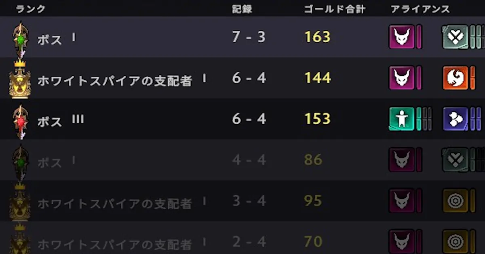
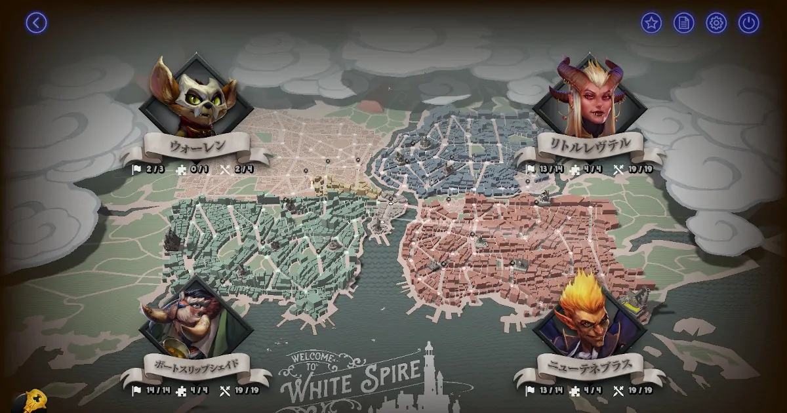
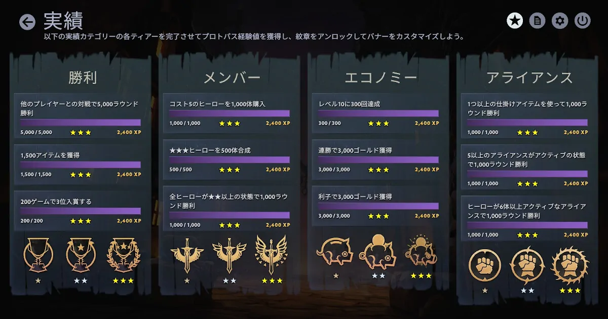

Dota Underlordsのランクマッチが壊れる

Dota Underlordsのランクマッチが壊れている。以前のように同ランクでマッチングしなくなった。
ノックアウトモードでプレイしている。ランクはボスだ。ベータではホワイトスパイアの支配者とマッチングすることはなかった。なぜこのようなことが起きているのかは不明。中級者が超上級者に勝てないわけではない。将棋ではなく麻雀だからだ。最終型も無情6やハンター6など簡単なものがある。だからといって無差別級で良いはずがない。
超上級者と当たる弊害は終盤に進めずに終わることだ。試合が進むほどやることは減るので練習としては中盤までで十分だ。しかし上位に入らないとランクポイントも入らないし徒労感が強いのでモチベーションが落ちる。上手くなるうえで大切なことはやる気である。そのやる気は勝つことでしか維持できない。現在の状況は無敵のAIに挑むようなものでプレイヤーが離れる要因になりうる。

新たに実装された街歩きだがPCだと重い。Googleマップの3D表示のように描画しているせいだ。俯瞰で見下ろすだけで街を歩けるわけではない。クエストを消化しても展開していく街並みは均一で退屈だ。

ベータでは実績をすべてアンロックしてゴミのような紋章を受け取った。運営にセンスがないのだ。街歩き限定のアイテムを集める作業もこれと似ていて時間の無駄だ。こんなものに開発リソースを割くのは馬鹿げている。